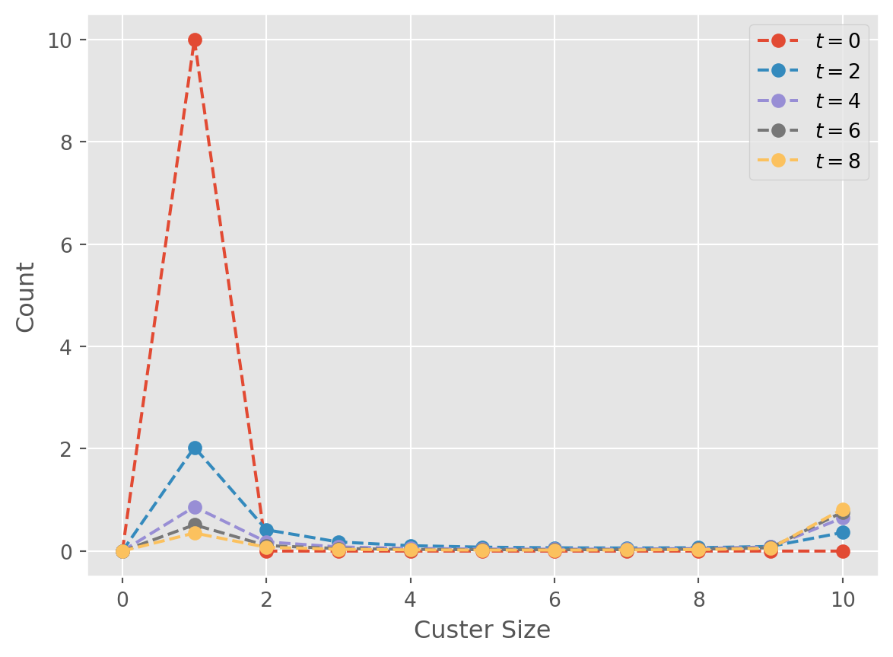
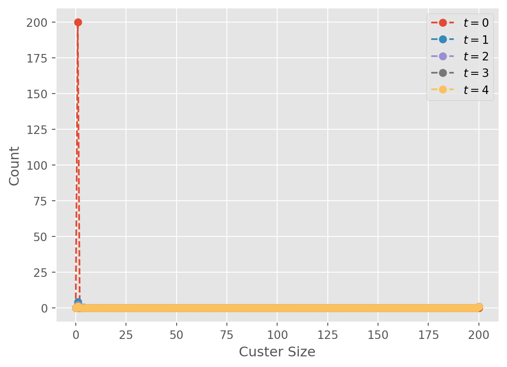
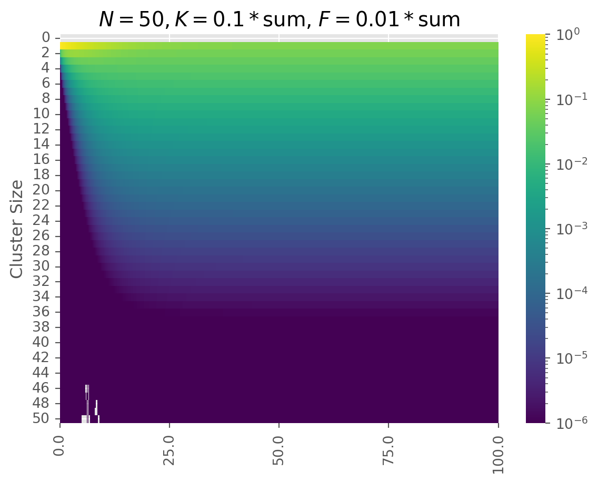
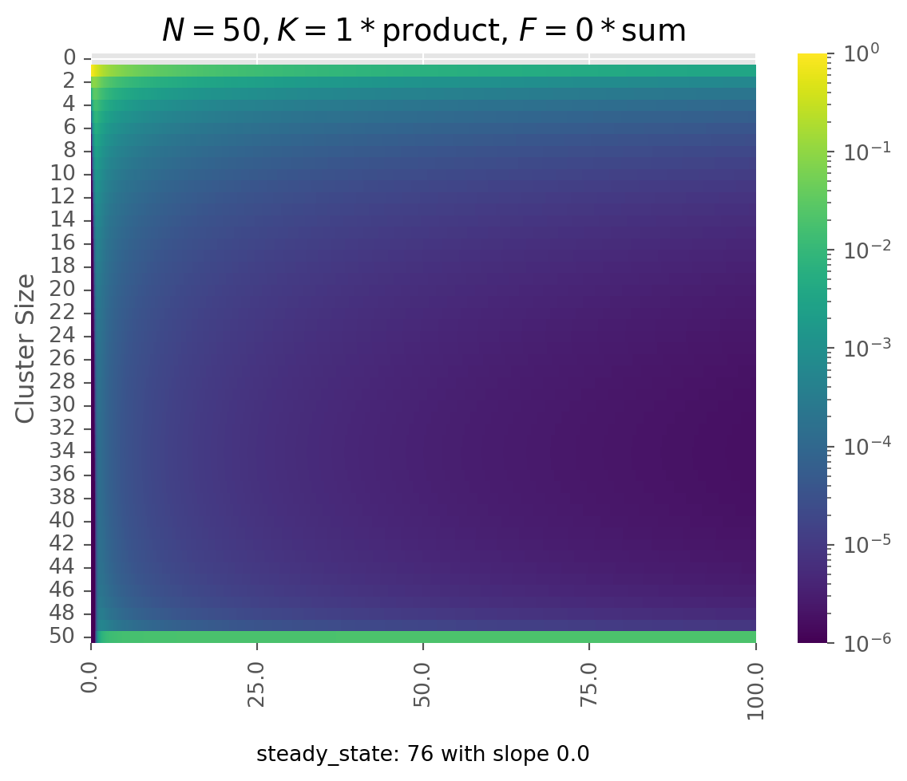
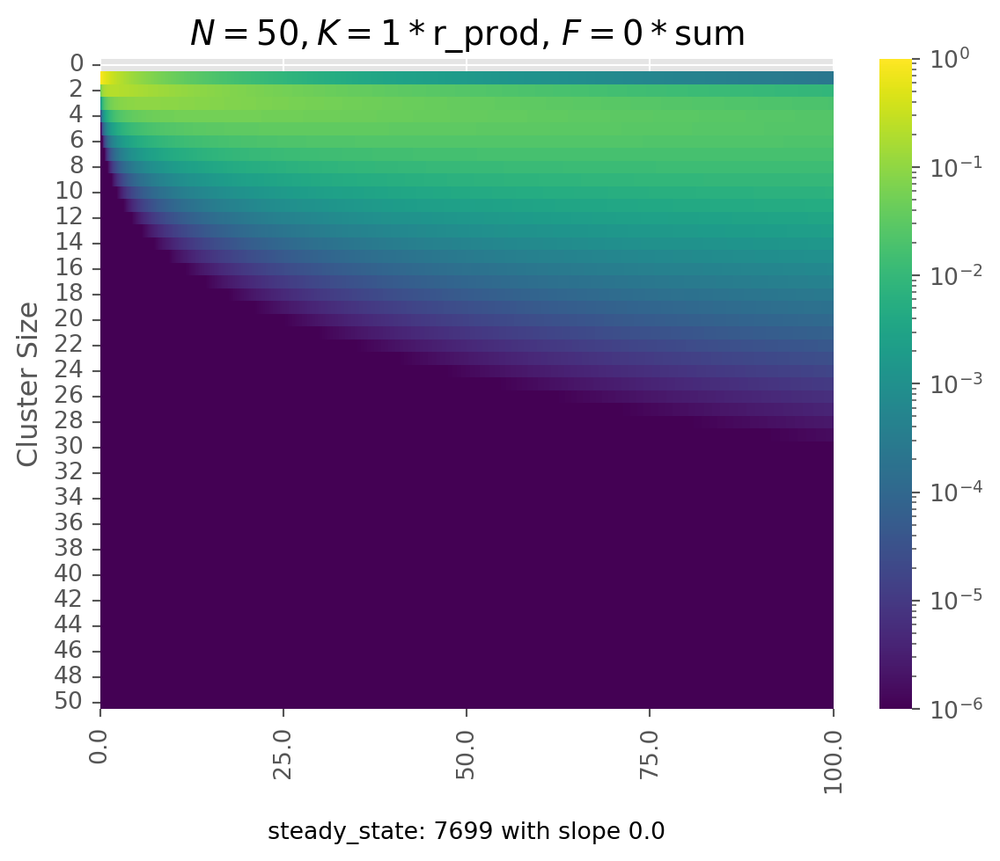
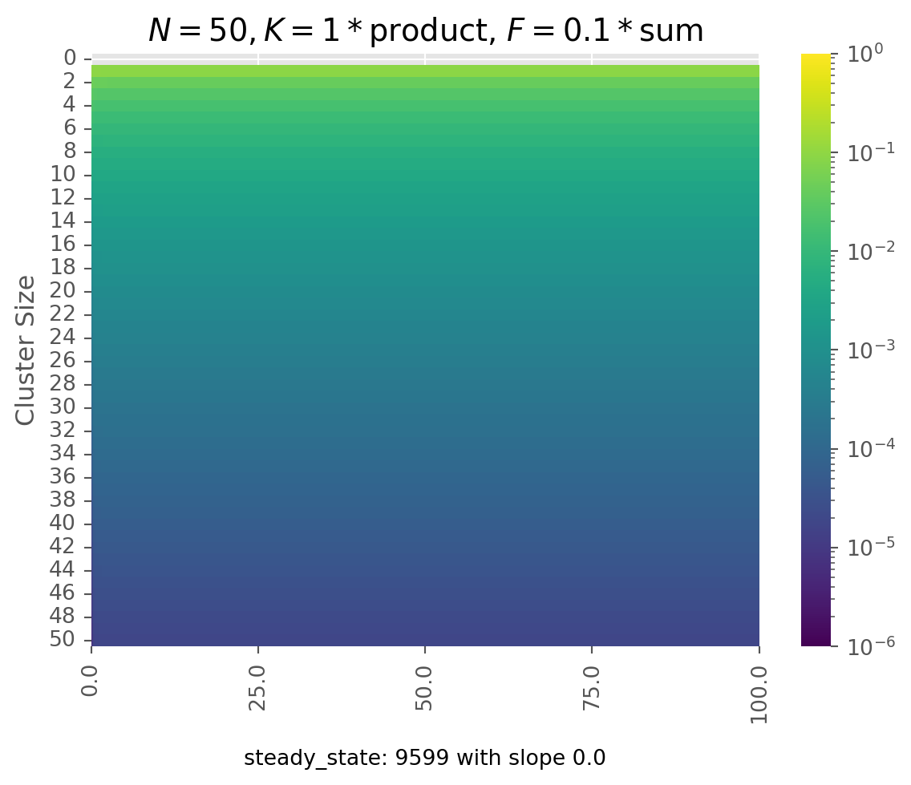
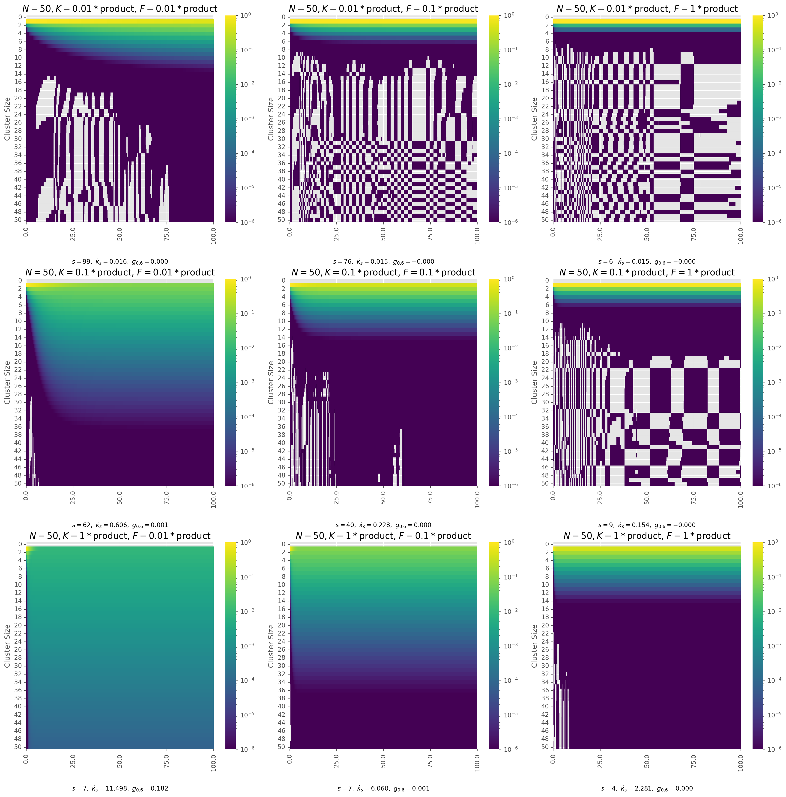

import sys, os
from pathlib import Path
_project_root = Path.cwd()
while not (_project_root / "src").exists():
_project_root = _project_root.parent
os.chdir(_project_root) Initial Exploration of (Dis)Aggregation Dynamics
Code analyzing the aggregation and disaggregation of dynamics over time.
# library imports
from itertools import product
# package imports
import numpy as np
import pandas as pd
import seaborn as sns
import matplotlib.pyplot as plt
from scipy.integrate import odeint
from numba import jit
from IPython.display import display, Markdown
from odeintw import odeintw
import matplotlib.colors as mcolors
# package global configs
plt.style.use(["ggplot"])# Define page width
IMG_WIDTH = 6
IMG_HEIGHT = 6Master Equations
The master equation is:
\[ \frac{\mathrm{d} c_{k}}{\mathrm{d} t } = \frac{1}{2} \sum _{i+j=k} K_{ij}c_{i}c_{j} - c_{k}\sum _{j \geq 1}K_{kj}c_{j} + \sum _{j\geq 1} F_{kj} c_{j+k} - \frac{1}{2} c_{k} \sum _{i+j=k}F_{ij} \]
Where \[ K_{ij} = \begin{cases} 150^{2}ij + 150(i_+j) + 4 \\ ij \end{cases} \]
Another way to think of this is that there are \(N\) quantities that can vary independently, where \(N = \sum_k c_k(0) \cdot k\)
Aggregation Alone
def build_kernel(kernel_rule, N: int):
K = np.zeros((N+1, N+1))
for i in range(N+1):
for j in range(N+1):
K[i, j] = kernel_rule(i, j)
return K
build_kernel(lambda i, j : 2, 3)array([[2., 2., 2., 2.],
[2., 2., 2., 2.],
[2., 2., 2., 2.],
[2., 2., 2., 2.]])def aggregation_dot(x, t, K, N):
dx = np.zeros_like(x)
for k in range(1, N + 1):
for i in range(1, k):
j = k - i
if i + j <= N:
dx[k] += 0.5 * K[i, j] * x[i] * x[j]
for j in range(1, N+1 - k):
dx[k] -= x[k] * K[k, j] * x[j]
return dxdef aggregate_meq(
kernel_rule,
N,
t_length=5,
t_steps=100,
ax=None,
title_string="",
label=True,
):
t_vec = np.linspace(0, t_length, t_steps * (t_length + 1))
x_0 = np.zeros(N + 1, dtype=float) # shape: cluster size
x_0[1] = N # initially all monomers
K = build_kernel(kernel_rule, N + 1)
G = lambda x, t: aggregation_dot(x, t, K, N)
x_path = odeint(G, x_0, t_vec)
mass = np.dot(np.arange(N + 1), x_path.T)
if not np.allclose(mass, mass[0]):
print(f"Mass not conserved: {mass}")
# product plot
if ax is not None:
total_time = t_length * t_steps
step_scale = total_time // 5
for t in np.arange(0, total_time, step_scale):
ax.plot(
range(N + 1),
x_path[t],
marker="o",
ls="--",
label=rf"$t = {t // t_steps:}$",
)
if label:
ax.set_ylabel("Count")
ax.set_xlabel("Custer Size")
return t_vec, x_pathfig, ax = plt.subplots()
aggregate_meq(
kernel_rule=lambda i, j: .1 * i * j,
N=10,
t_length=10,
t_steps=100,
ax=ax,
title_string="",
label=True,
)
plt.legend()
plt.show()
fig, ax = plt.subplots()
aggregate_meq(
kernel_rule=lambda i, j: .1 * i * j,
N=200,
t_length=5,
t_steps=100,
ax=ax,
title_string="",
label=True,
)
plt.legend()
plt.show()
This works, but… on reflection it’s not quite doing what we want; it’s not giving us a sense of how the probability is shifting, just giving us the exact counts…
Stochastic Aggregation (aborted)
def twoD_aggregation_dot(x, t, K, N):
dx = 0 * x
concentrations = np.sum(x, axis=0) # still just summing, though...
outflow_transition = np.zeros(N, N)
inflow_transition = np.zeros(N, N)
for size, count in np.ndindex(x.shape):
outflow_transition[size, count] = count * sum(
[K[size, j] * concentrations[j] for j in range(1, N)]
)
pairs = [(i, k - i) for i in range(1, k)]
inflow_transition[size, count] = 0.5 * sum(
[K[size, j] * concentrations[i] * concentrations for i, j in pairs]
)def twoD_integrate_aggregation(kernel_rule, N, axes=None, t_length=5, t_steps=100):
t_vec = np.linspace(0, t_length, t_steps * (t_length +1))
x_0 = np.zeros((N+1, N+1), dtype=float) # shape: cluster size k, size count c, where value = probability
x_0[1][N] = 1 # initially all monomers
K = build_kernel(kernel_rule, N+1)
G = lambda x, t : aggregation_dot(x, t, K, N )
x_path = odeintw(G, x_0, t_vec)Aggregation and Fragmentation in One
Parameterize the kernel dictionaries
def delta(a, b):
return 1 if a==b else 0
kernel_dictionary = {
"product": lambda i, j: i * j,
"r_prod": lambda i, j : 1 / (i *j) if i*j > 0 else 0,
"sum": lambda i,j : i + j ,
"constant" : lambda i,j : 1,
"chipping_1": lambda i, j : delta(i, 1) + delta(j, 1),
"chipping_5": lambda i, j : delta(i, 5) + delta(j, 5),
}In order to keep track of the cost, we need to monitor both the number of interventions that are actually applied, and the size of those interventions.
def agg_frag_dot(x, t, K, F, N):
dx = np.zeros_like(x)
cost_number = 0
cost_amount = 0
for k in range(1, N + 1):
for i in range(1, k):
j = k - i
dx[k] += 0.5 * K[i, j] * x[i] * x[j] ## agg inflow
frag_out = 0.5 * x[k] * F[i,j]
dx[k] -= frag_out ## frag outflow
cost_number += 1 / (1 + np.exp(-frag_out * 1000))
cost_amount += frag_out * min(i, j)
for j in range(1, N+1 - k):
dx[k] -= x[k] * K[k, j] * x[j] ## agg outflow
frag_in = F[k, j] * x[k + j] ## frag inflow
dx[k] += frag_in
cost_number += 1 / (1 + np.exp(-frag_in * 1000))
cost_amount += frag_in * min(j, k)
dx[N+1] = cost_number # number of frag
dx[N+2] = cost_amount # amount of frag
return dxdef agg_frag_meq(
agg_rule,
frag_rule,
N,
t_length=5,
t_steps=100,
initial_conditions={1 : 1 }
):
t_vec = np.linspace(0, t_length, t_steps * (t_length + 1))
# x shape: first N+1 for cluster size, then info storage
x_0 = np.zeros(N + 1 + 2, dtype=float)
# setup, initially all monomers, in current version. by probability
for size, prop in initial_conditions.items():
x_0[size] = prop
agg_kernel, agg_multiplier = agg_rule
frg_kernel, frg_multiplier = frag_rule
K = build_kernel(kernel_dictionary[agg_kernel], N + 1)
K *= agg_multiplier
F = build_kernel(kernel_dictionary[frg_kernel], N + 1)
F *= frg_multiplier
G = lambda x, t: agg_frag_dot(x, t, K, F, N)
x_path = odeint(G, x_0, t_vec)
x_path, cost_path = x_path[:, :-2], x_path[:, -2:]
mass = np.dot(np.arange(N + 1), x_path.T)
if not np.allclose(mass, mass[0]):
print(f"Mass not conserved: {mass}")
return t_vec, x_path, cost_pathdef heatmap_cluster_sizes(ax, t_length, x_path, title_string="", shown_steps=5 ):
if ax is not None:
sns.heatmap(
x_path.T,
ax=ax,
cmap="viridis",
norm=mcolors.LogNorm(vmin=1e-6, vmax=1),
)
ax.set_ylabel("Cluster Size")
ax.set_xticks(np.linspace(0, x_path.shape[0], shown_steps))
ax.set_xticklabels(np.round(np.linspace(0, t_length, shown_steps), 1))
ax.set_title(title_string)Try a couple of these:
fig, ax = plt.subplots()
agg_kernel = "sum"
agg_multiplier = .1
frg_multiplier = .01
frg_kernel = "sum"
agg_rule = (agg_kernel, agg_multiplier)
frag_rule = (frg_kernel, frg_multiplier)
N = 50
t_length = 100
t_steps = 100
axes = ax
title_string = rf"$N={N}, K={agg_multiplier}*${agg_kernel}, $F={frg_multiplier}*${frg_kernel}"
t_vec, x_path, cost_path = agg_frag_meq(
agg_rule=agg_rule,
frag_rule=frag_rule,
N=N,
t_length=t_length,
t_steps=t_steps,
)
heatmap_cluster_sizes(ax, t_length, x_path, title_string=title_string)
plt.show()
Calculations
There are three additional things we want to do/know: 1. Did we reach a steady state? * We can see if the last \(\tilde{n}\) iterations are all similar (np.allclose) * we could even then iterate through and see when we reached the steady state 2. How much probability for different definitions of ‘domination’ at end: * more than 60% * more than 70% 3. What’s the gradient of the cost in the steady state? * can do just the smallest value 4. work from different initial conditions
def steady_state(x_path, t_steps=100, step=10, atol=1e-3):
length = len(x_path)
if not np.allclose(x_path[-1], x_path[-20:], atol=atol):
return 0
for count in range(1, int(0.5 * length), t_steps):
if not np.allclose(x_path[-1], x_path[-count], atol=atol):
return (length - count)
if np.allclose(x_path[-1], x_path[count], atol=atol):
return count
return 0
s_idx = steady_state(x_path)
print(s_idx)4501def calculate_domination(x_path, cutoff: float, sizes=None):
N = x_path.shape[1] - 1
if sizes is None:
sizes = np.arange(N + 1)
min_dom_idx = int(N * cutoff)
dominating_prob = x_path[-1, min_dom_idx:]
dominating_masses = dominating_prob * sizes[min_dom_idx:]
return dominating_masses.sum()
calculate_domination(x_path, 0.6)np.float64(0.0009525699243500924)def steady_state_slope(cost_path, t_vec, s_idx):
if s_idx:
grad = np.gradient(cost_path[:, 1], t_vec)
steady_grad = grad[s_idx:].mean()
return steady_grad
return 0
steady_state_slope(cost_path, t_vec, s_idx)np.float64(0.2267623291789237)initial_condition_dict = {
"All Monomer": {1 : 1},
"Di_Monomer" : {1 : .5, 2: .25},
"First 10": {i: 1/(i*10) for i in range(1, 11)}
}fig, ax = plt.subplots()
agg_kernel = "product"
agg_multiplier = 1
frg_multiplier = 0
frg_kernel = "sum"
agg_rule = (agg_kernel, agg_multiplier)
frag_rule = (frg_kernel, frg_multiplier)
N = 50
t_length = 100
t_steps = 100
title_string = rf"$N={N}, K={agg_multiplier}*${agg_kernel}, $F={frg_multiplier}*${frg_kernel}"
t_vec, x_path, cost_path = agg_frag_meq(
agg_rule=agg_rule,
frag_rule=frag_rule,
N=N,
t_length=t_length,
t_steps=t_steps,
)
heatmap_cluster_sizes(ax, t_length, x_path, title_string=title_string)
sizes = np.arange(N + 1)
s_idx = steady_state(x_path)
s_slope = steady_state_slope(cost_path, t_vec, s_idx)
dom = calculate_domination(x_path, 0.6, sizes)
ax.text(
0.5,
-0.2,
f"steady_state: {s_idx // t_length} with slope {s_slope}",
transform=ax.transAxes,
ha="center",
)
plt.show()
print(s_idx, s_slope, dom)
7699 0.0 0.9921574644179032fig, ax = plt.subplots()
agg_kernel = "r_prod"
agg_multiplier = 1
frg_multiplier = 0
frg_kernel = "sum"
agg_rule = (agg_kernel, agg_multiplier)
frag_rule = (frg_kernel, frg_multiplier)
N = 50
t_length = 100
t_steps = 100
title_string = rf"$N={N}, K={agg_multiplier}*${agg_kernel}, $F={frg_multiplier}*${frg_kernel}"
t_vec, x_path, cost_path = agg_frag_meq(
agg_rule=agg_rule,
frag_rule=frag_rule,
N=N,
t_length=t_length,
t_steps=t_steps,
)
heatmap_cluster_sizes(ax, t_length, x_path, title_string=title_string)
ax.text(0.5, -0.2, f"steady_state: {s_idx} with slope {s_slope}", transform=ax.transAxes, ha='center')
s_idx = steady_state(x_path)
s_slope = steady_state_slope(cost_path, t_vec, s_idx)
dom = calculate_domination(x_path, .6)
print(s_idx, s_slope, dom)
plt.show()9599 0.0 7.514998732075187e-05
fig, ax = plt.subplots()
agg_kernel = "product"
agg_multiplier = 1
frg_multiplier = 0.1
frg_kernel = "sum"
agg_rule = (agg_kernel, agg_multiplier)
frag_rule = (frg_kernel, frg_multiplier)
N = 50
t_length = 100
t_steps = 100
title_string = rf"$N={N}, K={agg_multiplier}*${agg_kernel}, $F={frg_multiplier}*${frg_kernel}"
init_cond = initial_condition_dict["First 10"]
t_vec, x_path, cost_path = agg_frag_meq(
agg_rule=agg_rule,
frag_rule=frag_rule,
N=N,
t_length=t_length,
t_steps=t_steps,
initial_conditions=init_cond,
)
heatmap_cluster_sizes(ax, t_length, x_path, title_string=title_string)
ax.text(
0.5,
-0.2,
f"steady_state: {s_idx} with slope {s_slope}",
transform=ax.transAxes,
ha="center",
)
plt.show()
s_idx = steady_state(x_path)
s_slope = steady_state_slope(cost_path, t_vec, s_idx)
dom = calculate_domination(x_path, 0.6)
print(s_idx, s_slope, dom)
301 7.576648687830119 0.0561603514039577Grid Search
For nomenclature:
- \(K\) is the matrix of aggregation rates
- \(F\) is the matrix of fragmentation rates
- \(T\) is the total time the simulation runs
- \(N\) is the total amount of mass, conserved across all steps. We normalize this to one, but we still have a discrete number of clusters, so it effects how fine grained the simulation can be.
- \(t \in \{ 1 \dots T \}\) is the variable for how much clock time – not integration steps – have passed
- \(\vec{\mathbf{c}_{t}} \equiv \{ c_{1}(t), c_{2}(t), \dots, c_{k}(t) \}\) is the vector of all cluster sizes at a given time \(t\)
- \(C \equiv \{ \vec{\mathbf{c}}_{0}, \dots, \vec{\mathbf{c}}_{T} \}\) is what our integration returns; the vector of the cluster distributions at each time step.
- \(\alpha\) scales the aggregation matrix
- \(\beta\) scales the fragmentation matrix
- \(s \equiv \min(t) \mid C_{s}=C_{i}\quad \forall i>s\)
- \(\kappa_{t} = .5\sum F_{ij}c_{k}(t) \times \min(i, j) + \sum F_{kj} c_{k+j}(t) \times \min(k,j)\); the total number of mass units that are removed from other masses via fragmentation at any given time step
- \(\dot{\kappa}\) is the gradient of the cost, and \(\dot{\kappa}_{s}\) is the gradient at the steady state
\[ g_{x}= \frac{\sum_{{k > xN}} c_{k}(t)}{\sum c_{k(t)}} \] The proportion of clusters of size greater than \(x\), where \(x\) is a float indicating the threshold for what we consider a dominating cluster.
initial_conds = ["All Monomer"]
agg_kernels = ["product"]
agg_multipliers = [0.01, 0.1, 1]
frg_kernels = ["product"]
frg_multipliers = [0.01, 0.1, 1]
init_conds = ["All Monomer", "First 10"]
count = (
len(agg_kernels)
* len(frg_kernels)
* len(agg_multipliers)
* len(frg_multipliers)
* len(initial_conds)
)
results_dict = {
"agg_kernel": [],
"agg_multiplier": [],
"frg_kernel": [],
"frg_multiplier": [],
"N": [],
"t_length": [],
"s_idx": [],
"s_slope": [],
"init_cond": [],
"dom60": [],
"dom80": [],
}
ncols = 3
nrows = (count + 1) // ncols
sizes = np.arange(N + 1)
fig, axes = plt.subplots(
nrows=nrows,
ncols=ncols,
figsize=(IMG_WIDTH * ncols, IMG_HEIGHT * nrows),
)
axes = axes.flatten()
for i, (
agg_kernel,
agg_multiplier,
frg_kernel,
frg_multiplier,
init_cond,
) in enumerate(
product(
agg_kernels,
agg_multipliers,
frg_kernels,
frg_multipliers,
initial_conds,
)
):
agg_rule = (agg_kernel, agg_multiplier)
frag_rule = (frg_kernel, frg_multiplier)
N = 50
t_length = 100
t_steps = 100
ax = axes[i]
title_string = (
rf"$N={N}, K={agg_multiplier}*${agg_kernel}, $F={frg_multiplier}*${frg_kernel}"
)
t_vec, x_path, cost_path = agg_frag_meq(
agg_rule=agg_rule,
frag_rule=frag_rule,
N=N,
t_length=t_length,
t_steps=t_steps,
initial_conditions=initial_condition_dict[init_cond],
)
heatmap_cluster_sizes(ax, t_length, x_path, title_string=title_string)
s_idx = steady_state(x_path)
s_slope = steady_state_slope(cost_path, t_vec, s_idx)
dom60 = calculate_domination(x_path, 0.6, sizes)
dom80 = calculate_domination(x_path, 0.8, sizes)
ax.text(
0.5,
-0.2,
rf"$s={s_idx // t_length},\ \dot{{\kappa}}_s={s_slope:.3f},\ g_{{0.6}}={dom60:.3f}$",
transform=ax.transAxes,
ha="center",
)
print(f"finished block {i}")
results_dict["agg_kernel"].append(agg_kernel)
results_dict["agg_multiplier"].append(agg_multiplier)
results_dict["frg_kernel"].append(frg_kernel)
results_dict["frg_multiplier"].append(frg_multiplier)
results_dict["N"].append(N)
results_dict["t_length"].append(t_length)
results_dict["s_idx"].append(s_idx)
results_dict["s_slope"].append(s_slope)
results_dict["init_cond"].append(init_cond)
results_dict["dom60"].append(dom60)
results_dict["dom80"].append(dom80)
df = pd.DataFrame(results_dict)
plt.tight_layout()
plt.show()finished block 0
finished block 1
finished block 2
finished block 3
finished block 4
finished block 5
finished block 6
finished block 7
finished block 8
display(Markdown(df.to_markdown()))| agg_kernel | agg_multiplier | frg_kernel | frg_multiplier | N | t_length | s_idx | s_slope | init_cond | dom60 | dom80 | |
|---|---|---|---|---|---|---|---|---|---|---|---|
| 0 | product | 0.01 | product | 0.01 | 50 | 100 | 9999 | 0.0160631 | All Monomer | 1.80929e-12 | 8.1075e-17 |
| 1 | product | 0.01 | product | 0.1 | 50 | 100 | 7699 | 0.0153218 | All Monomer | -2.79763e-25 | -1.48561e-26 |
| 2 | product | 0.01 | product | 1 | 50 | 100 | 601 | 0.0149909 | All Monomer | -1.07412e-29 | -1.52485e-30 |
| 3 | product | 0.1 | product | 0.01 | 50 | 100 | 6299 | 0.605625 | All Monomer | 0.000952485 | 5.13488e-05 |
| 4 | product | 0.1 | product | 0.1 | 50 | 100 | 4001 | 0.228029 | All Monomer | 1.43122e-11 | 1.25511e-15 |
| 5 | product | 0.1 | product | 1 | 50 | 100 | 901 | 0.153928 | All Monomer | -3.07433e-25 | -2.18946e-29 |
| 6 | product | 1 | product | 0.01 | 50 | 100 | 701 | 11.4976 | All Monomer | 0.182273 | 0.0622698 |
| 7 | product | 1 | product | 0.1 | 50 | 100 | 701 | 6.05957 | All Monomer | 0.000952571 | 5.1356e-05 |
| 8 | product | 1 | product | 1 | 50 | 100 | 401 | 2.28076 | All Monomer | 1.43122e-11 | 1.25511e-15 |